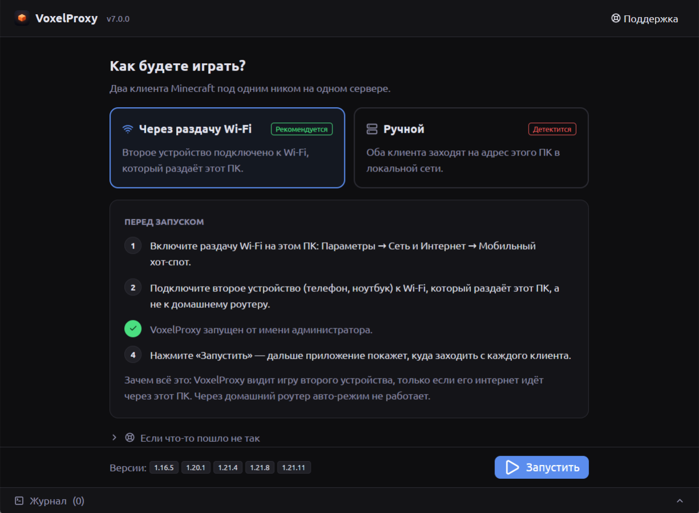

Два клиента Minecraft под одним ником на одном сервере
Локальный прокси: сервер видит одного игрока, а управлять им можно с любого из двух клиентов и переключаться без перезахода.

Как это работает
клиент 1 ──┐
├── VoxelProxy ── сервер
клиент 2 ──┘
Оба клиента подключаются к прокси, а прокси держит одно соединение с сервером. В каждый момент персонажем управляет один клиент, второй ждёт. При переключении персонаж остаётся на сервере: не выходит, не попадает на спавн и не теряет место в очереди.
Например, играете с основного ПК, а когда вызывают на проверку, показываете чистый клиент со второго устройства. Игровой трафик идёт только через ваш компьютер. Работает на лицензионных и пиратских серверах.
Режимы
| Через раздачу Wi-Fi рекомендуется | Этот ПК раздаёт Wi-Fi («Мобильный хот-спот»), второе устройство подключено к нему. Нужен запуск от администратора. |
|---|---|
| Ручной палится | Оба клиента заходят на адрес этого ПК в локальной сети. Проще настроить, но на проверке через AnyDesk или Discord модератор увидит, что игра подключена к локальному адресу, а за это банят. |
Установка
- Скачайте
voxelproxy_x.x.x_x64_ru-RU.msiсо страницы релиза и установите. - Запустите от имени администратора и выберите режим.
- Пройдите список шагов на экране и нажмите «Запустить».
- Зайдите на адрес, который покажет приложение: сначала с основного клиента, потом со второго.
Если что-то не работает, в приложении есть раздел «Если что-то пошло не так» и кнопка «Поддержка»: ответ придёт прямо в окно программы.
Версии Minecraft
1.16.5 · 1.20.1 · 1.21.4 · 1.21.8 · 1.21.11